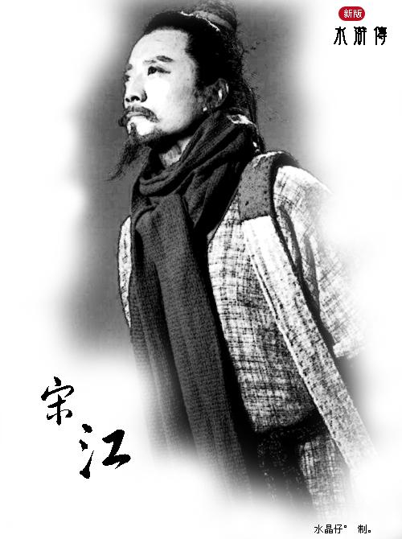

人物图片
人物评价
一百单八将之首，本是上界天魁星。
李贽对宋江的评价较高，认为他是忠义的化身，才干的象征，对他赞不绝口！ 我认为《水浒传》中的宋江，作为梁山好汉的领袖，成功地和108 将在乱世中闯荡出一番天地。有着异于常人的才能与特点。 宋江为人仗义疏财，素有“及时雨”的美誉。他的慷慨大方使他在江湖上结交了广泛的人脉，为日后梁山事业的发展奠定了基础。当兄弟们遇到困难时，他总是毫不犹豫地伸出援手，这种重情重义的品质赢得了众人的尊敬和信任。无论是林冲、武松这样的豪杰，还是时迁、段景住这样的小人物，都能感受到宋江的真诚关怀，愿意跟随他出生入死。 宋江有着出色的领导才能和战略眼光。他能够审时度势，根据不同的情况制定出相应的策略，十分有才能和和主见。在面对朝廷的围剿时，他冷静分析敌我形势，合理调配兵力，多次化险为夷。同时，他深知梁山的长远发展不能仅仅依靠武力对抗，而是要寻找一条招安的道路，为兄弟们谋一个好的前程。虽然招安之举备受争议，但不可否认的是，这也是宋江为了众多兄弟的未来所做出的一种考虑和抉择。 宋江善于协调各方关系，是梁山中的一员，同样也是重要的领袖。他善于 108 将凝聚成一个团结的整体。梁山好汉来自不同的阶层和背景，性格和脾气也各不相同，难免会产生矛盾和冲突。宋江总是能够凭借自己的智慧和威望，化解这些矛盾，使大家心往一处想，劲往一处使。他尊重每一位兄弟的意见和建议，充分发挥每个人的特长，让他们在梁山这个大家庭中找到自己的位置和价值。 再者，宋江有着坚定的信念和目标。他始终怀揣着“替天行道”的理想，认为梁山的事业是正义的，是为了拯救百姓于水火之中，热爱着这份事业。这种信念感染了众多兄弟，使他们愿意为了共同的目标而努力奋斗。在他的带领下，梁山好汉们劫富济贫、惩治贪官污吏，赢得了民众的支持和赞誉。 然而，宋江在 108 将中的领导地位也并非毫无瑕疵。他的招安决策在一定程度上导致了梁山好汉的悲剧结局，这也反映出他在复杂的政治局势面前的无奈和局限性。但从整体来看，宋江在梁山的发展过程中发挥了至关重要的作用。 综上所述，宋江凭借其仗义疏财的品质、出色的领导才能、协调关系的智慧、坚定的信念和目标，使他在梁山的历史上留下了浓墨重彩的一笔，虽然有过失误和遗憾，但他的功绩依然不可磨灭。正是在他的带领下，梁山好汉们的故事才得以传颂千古，成为中国文学史上的经典之作。所以说他的地位十分重要。